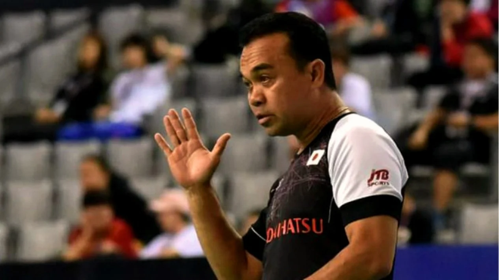

Football

Timnas Indonesia akan TC di Turki Jelang Piala Asia 2023, Egy Maulana Vikri Menanti Panggilan Shin Tae-yong
Zulfirdaus Harahap
09 Desember 2023
Gelandang Dewa United, Egy Maulana Vikri, mengakui kondisinya saat ini sudah bugar.
Situasi itu membuat Egy menantikan pemanggilan dari pelatih Shin Tae-yong ke Timnas Indonesia.
Timnas Indonesia dijadwalkan melakukan pemusatan di Turki pada 20 Desember 2023 sampai 6 Januari 2024.
Kegiatan ini dilakukan untuk mematangkan persiapan jelang Piala Asia 2023......
Daftar Lengkap Pemain Naturalisasi Timnas Indonesia di Era Shin Tae-yong: Didominasi Penggawa Muda ‘Grade A’
Radifa Arsa
11 Desember 2023
Sejak pertama kali ditunjuk sebagai pelatih Timnas Indonesia pada Desember 2019,
Shin Tae-yong telah menjadi juru taktik yang identik dengan pemain-pemain naturalisasi.
Bisa dibilang, di bawah era Shin Tae-yong, Timnas Indonesia di beberapa kelompok usia
memproses pemain keturunan dengan jumlah yang paling banyak dibanding era pelatih-pelatih sebelumnya.
Kabar Baik untuk Timnas Indonesia! Rafael Struick Makin Gacor Jelang Piala Asia 2023
Zulfirdaus Harahap
10 Desember 2023
Kabar baik datang dari penyerang Timnas Indonesia, Rafael Struick.
Pemain naturalisasi itu turut menyumbang satu gol untuk ADO Den Haag U-21.
Rafael Struick mencetak gol yang membuat ADO Den Haag terhindar dari kekalahan saat melawan Feyenoord di Divisie 1 U-21.
Gol penyerang Timnas Indonesia itu membuat kedua tim harus puas bermain imbang 3-3.
Jadwal Lengkap Piala Asia 2023 di Qatar
Benediktus Gerendo Pradigdo
11 Desember 2023
Piala Asia 2023 akan digelar pada 12 Januari hingga 10 Februari 2024.
Ada 24 tim yang akan bersaing untuk bisa menjadi yang terbaik di Benua Kuning.
Ke-24 peserta dibagi menjadi enam grup, yang artinya akan ada empat tim di setiap grupnya.
Juara dan runner-up grup akan lolos otomatis ke babak 16 besar, sementara tim peringkat
ketiga dari keenam grup akan berebut empat slot tersisa untuk lolos ke 16 besar Piala Asia 2023.
Car Sport
Bagaimana Nasib Mobil F1 Setelah Musim Berakhir?
Mario Galán
10 Desember 2023
Setiap musim, tim Formula 1 membangun mobil balap mereka untuk bersaing mencapai tujuan atau kalau bisa memenangi gelar.
Tetapi, setelah tahun berakhir, mobil tersebut tidak akan lagi berada di lintasan secara resmi.
Namun, semua usaha untuk menciptakan salah satu mobil tercepat di planet ini tidaklah sia-sia.
Mereka menggunakannya kembali untuk hal-hal yang berbeda.
Hamilton kecam penyelidikan FIA terhadap Susie dan Toto Wolff
Eka Arifa Rusqiyati
09 Desember 2023
Pembalap Lewis Hamilton mengecam penyelidikan atas dugaan
adanya konflik kepentingan yang sempat dibuka namun kemudian ditutup kembali
oleh FIA terhadap Bos Tim Mercedes Toto Wolff dan istrinya Susie.....
FIA Mengesahkan Aturan Larangan Tes Aero F1 2026
Adam Cooper
08 Desember 2023
Menyusul kesepakatan pada pertemuan Komisi F1 baru-baru ini,
tim tidak diizinkan untuk melakukan pekerjaan terowongan angin atau
CFD untuk mobil spesifikasi baru hingga 1 Januari 2025, yang mencerminkan pengaturan
serupa yang dibuat menjelang perubahan peraturan besar terakhir pada 2022.....
Table Tennis
Tim Tenis Meja Indonesia Peringkat 6 di Kejuaraan Junior Asia di Qatar
Robbi Yanto
20 Juli 2023
Tim tenis meja Indonesia mencatat prestasi luar biasa pada Kejuaraan Tenis Meja Junior Asia ke-27
yang berlangsung di Qatar 17-21 Juli dengan menempati peringkat enam.
Pencapaian prestasi tersebut patut dibanggakan karena even ini diikuti raksasa' Asia seperti Cina, Jepang dan Korea.
Liga Tenis Meja Indonesia 2023-2024, Atlet Nasional Tempati Runner-up
Faishal Raihan
11 Maret 2023
Atlet tenis meja Indonesia Muhammad Bima Abdi Negara puas menjadi runner-up nomor
tunggal putra Inter Master Liga Tenis Meja Terry Palmer Indonesia (LTMTPI) 2023-2024 putaran pertama.
Muhammad Bima Abdi Negara sudah berjuang melawan pemain asal Korea Selatan (Korsel)
Jeong Yun-hun pada laga final di GOR Singgasana Bandung, Jawa Barat, Jumat (10/3/2023).
Badminton

Skuad Bulutangkis Indonesia Fokus Adaptasi Jelang BWF World Tour Finals 2023
Ridho Permana
11 Desember 2023
Setelah tiba hari Minggu kemarin, skuad bulutangkis Indonesia menggelar
latihan pertama di Hangzhou Olympic Sports Centre Gymnasium, Hangzhou,
China hari Senin pagi, 11 Desember 2023.
Skuad Bulutangkis Indonesia Bertolak ke China, 6 Wakil Bakal Tempur di BWF World Tour Finals 2023
Ridho PermanaFloyd Miles
10 Desember 2023
Tim bulutangkis Indonesia bertolak ke Hangzhou, China Sabtu malam 9 Desember untuk mengikuti BWF World Tour Finals 2023.
Mereka menggunakan maskapai Garuda Indonesia dengan nomor penerbangan GA0894 via Shanghai. Kepala Bidang Pembinaan dan Prestasi Rionny Mainaky memimpin langsung tim ini.